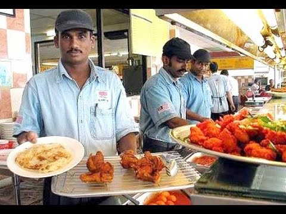
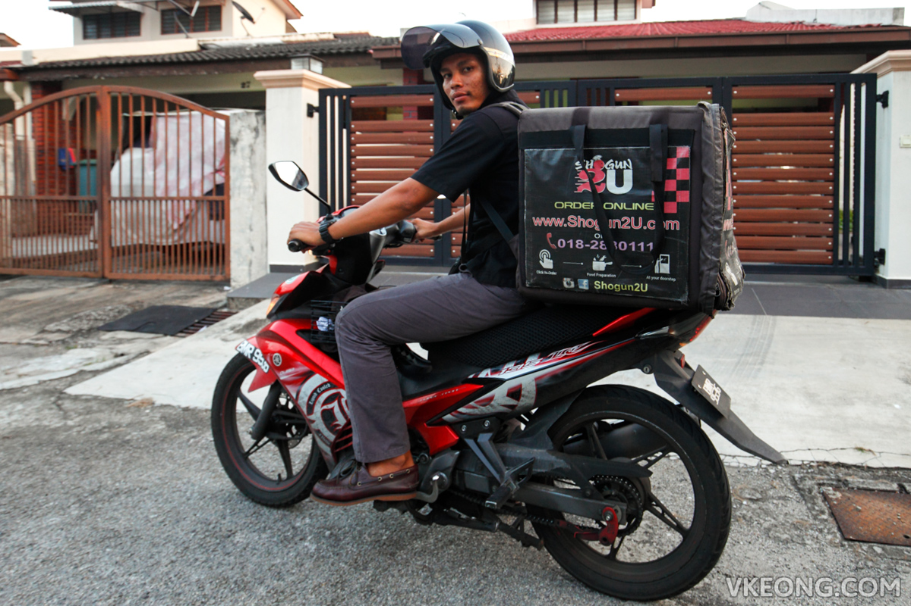
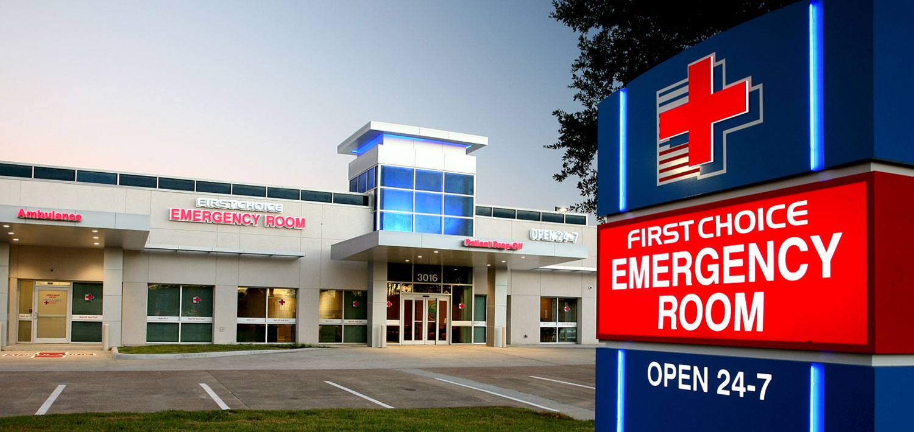

[Organic Food Delivery Service]
Malaysia's modern and vibrant capital, Kuala Lumpur, is a thriving metropolis that always moves.
It is the largest city in Malaysia.
- KL is the fashion capital of Malaysia with 66 shopping malls including restaurants.
- Kuala Lumpur is not only an attractive tourist destination but also a food hub.
Because of its energy, Kuala Lumpur residents are demanding the best food, which is why there are hundreds of exceptional places where the city orders delicious food.
You can order healthy lunch, dinner or even midnight snacks from various restaurants that provide 24 hours food delivery service in KL!

[24 Hours Medicare Service]
-Some hospitals in Kuala Lumpur offer 24-hour convenient medical services for the convenience of patients. Kuala Lumpur's 24-hour Medical Center is known for its high quality medical service. Most are located in the heart of a city that has recently been upgraded and has perfect modern facilities. Kuala Lumpur is the capital city of Malaysia and conveniently located in the areas of business, housing, hotel and resort.